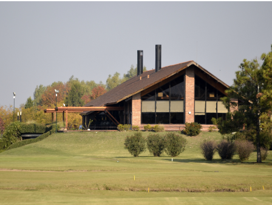
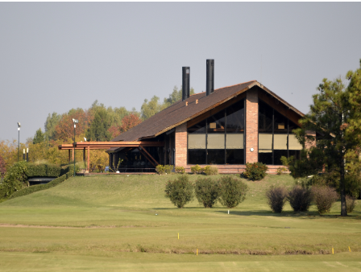
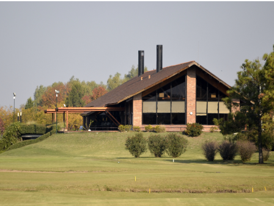

Somos una institución con apenas 5 anos de historia y estamos orgullosos de ser el lugar que muchos universitarios consideran su segunda casa. CAT fomenta el deporte amateur como un complemento necesario para la vida profesional y universitaria y ofrece a sus socios una gran variedad de deportes y actividades deportivas. El Club mantiene una Biblioteca pública, una pileta de natación y tiene un Ateneo Cultural que organiza una variada agenda de eventos y conferencias abiertos a todo público. Desde 2019 la Fundación CAT promueve el desarrollo social, cultural y deportivo en las comunidades cercanas a las sedes del club.
+54 911 4040 7272
c.a.t@gmail.com
